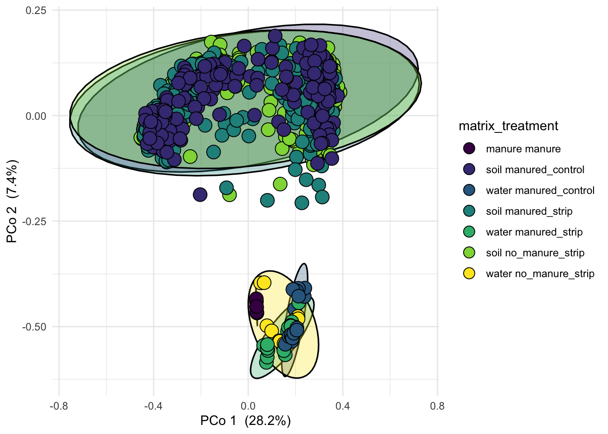
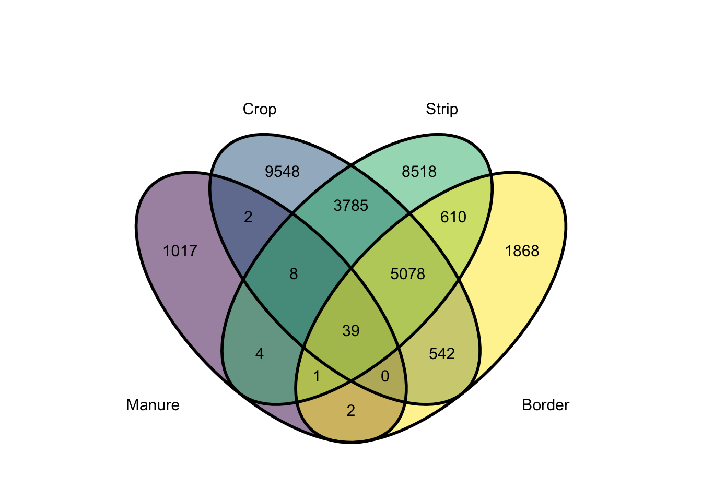

# Worle data
worle <- readRDS("Data/Worle_curated.RDS")
# set taxa to ASV, otherwise uses the sequence as taxa name
taxa_names(worle) <- paste0("ASV", seq(ntaxa(worle)))
# rename NA taxa as "Unclassified"
Tax.Table <- data.frame(tax_table(worle)) %>%
replace(is.na(.), "Unclassified")
# replace tax table
tax_table(worle) <- as.matrix(Tax.Table)16S
2/15/2021
Introduction
This code was used to generate figures for a publication titled: Prairie Strips Impact on Transport of Antibiotic Resistance Indicators in Poultry Litter
The manuscript is available here:
The project was designed to evaluate if the conservation practice of planting strips of prairie grasses within agricultural fields might attenuate the transport of Litter associated genes and bacteria.
Poultry Litter was applied to small plots appended with prairie strips and rainfall was simulated on the Litter applied ground. Runoff water samples were collected after passing through the prairie strip and soil samples were collected before and after the rainfall simulation. In both soil and water samples we looked for and tracked the presence and abundance of Litter associated bacteria and genes.
Figure 1
Figure was is a taxonomic profile of the bacteria present in the poultry Litter that was used as a fertilizer. Litter was applied to six of nine plots, two plots received Litter each day of a rainfall simulation. Rainfall simulations were performed on the nine plots over three days, one day each for a block of plots. Each block contained one plot from each treatment. The treatments were:
Crop + Strip (CS)
Crop + Strip + Litter (CSL)
Crop + Litter (CL)
The Litter applied to each plot came from a single ~ 60 lbs batch of Litter. When Litter was applied to each plot, a sample of Litter was taken to be analyzed for bacteria and antibiotic resistance genes. To track Litter associated bacteria, we must first characterize the bacteria present. Here we have six Litter samples and a bar plot representing the relative abundance of bacterial phyla in each sample. This data was generated using NGS sequencing of the 16S gene and analyzed using DADA2 to generate a count of the different taxa present in the various samples from the rainfall simulation.
16S Figures
First, visualize differences in communities by plotting PCoA ordination of the Bray-Curtis dissimilarity
colnames(sample_data(worle)) [1] "unique_id" "experiment" "matrix" "treatment"
[5] "plot" "sample_day" "depth" "in_plot_location"
[9] "block" "strip" "manure_treatment" "soil_type" sample_data(worle)$treatment[is.na(sample_data(worle)$treatment)] <- "manure"
pcoa <- pcoa_phyloseq(worle, c('matrix', 'treatment'), circle = T) +
scale_fill_viridis_d() +
theme_minimal()Scale for 'fill' is already present. Adding another scale for 'fill', which
will replace the existing scale.pcoa
ggsave(filename = "Figures/PCoA.jpeg", plot = pcoa, device = "jpeg", width = 7.0, height = 6.0, units = "in", dpi = 350)worle.manure <- subset_samples(worle, matrix == "manure") %>% # subset to manure
filter_taxa(function(x) sum(x) >= 1, T) # Remove taxa observed less than once in these samplesAs we make plots of taxa, it’s easier to understand if consistent colors are used for the various phyla. We can assign a color to each of these phyla then manually color plots based on this.
set.seed(010101)
# make a list of unique phyla
phylalist <- data.frame(tax_table(worle), row.names = NULL) %>%
select(Phylum) %>%
unique()
phylalist$Phylum <- as.character(phylalist$Phylum)
library(colorspace) # this package will generate a palette based on number and desired colors
# assign color from "viridis" package to each phyla and name the list with phyla names
colors <- sequential_hcl(n_distinct(phylalist), palette = "viridis") %>%
setNames(sort(phylalist$Phylum))Figure 1
Let’s calculate the relative abundance of each phyla in the manure and generate summary statistics (mean, standard error, and interquartile range)
global_size = 12 # Font size
phydf <- worle.manure %>%
tax_glom(taxrank = "Phylum") %>%
transform_sample_counts(function(x) x / sum(x)) %>%
psmelt() # Take manure phyloseq object and glom taxa at phyla level. Transform counts to relative abundance and melt to a data frame.
summary <- phydf %>% # Make a plot
group_by(Phylum) %>%
summarise(
n=n(),
mean=mean(Abundance),
sd=sd(Abundance)
) %>%
mutate(se = sd/sqrt(n)) %>%
mutate(ic = se * qt((1-0.05)/2 + .5, n-1)) %>%
arrange(-mean)
summary$Phylum <- factor(summary$Phylum, levels = summary$Phylum[order(-summary$mean)]) # arrange won't change order of Phylum factor levels
p1 <- ggplot(summary) +
theme_classic() +
geom_bar(aes(x = Phylum, y = mean, fill = Phylum), stat = "identity",
position = position_dodge(width = 0.75)) +
geom_errorbar( aes(x = reorder(Phylum, -mean), ymin = mean - ic, ymax = mean + ic), width = 0.2, colour = "black", size= 0.5) +
labs(y = "Relative abundance of phyla", x = "Phylum") +
scale_fill_manual(values = colors) +
theme(legend.position = "none",
axis.text.x = element_text(angle = 45, hjust = 1)) +
scale_y_continuous(labels = function(x) paste0(x*100, "%")) +
geom_text(x = "Proteobacteria", y = 0.60, label = "A", size = 8, family = "Times") +
theme(text = element_text(size = global_size, family = "Times"))
p1
# We can make a second smaller plot to show the abundances of the low abundance phyla
p2 <- ggplot(subset(summary, Phylum %in% tail(summary$Phylum, -5))) +
theme_classic() +
geom_bar(aes(x = reorder(Phylum, -mean), y = mean, fill = Phylum), stat = "identity",
position = position_dodge(width = 0.75)) +
geom_errorbar( aes(x = reorder(Phylum, -mean), ymin = mean - ic, ymax = mean + ic), width = 0.2, colour = "black", size= 0.5) +
labs(x = NULL, y = NULL) +
scale_fill_manual(values = colors) +
theme(legend.position = "none",
axis.text.x = element_text(angle = 45, hjust = 1)) +
scale_y_continuous(labels = function(x) paste0(x*100, "%")) +
geom_text(x = "Tenericutes", y = 0.0060, label = "B", size = 8, family = "Times") +
theme(text = element_text(size = global_size, family = "Times"))
p2
p3 <- p1 + annotation_custom(ggplotGrob(p2), xmin = "Deinococcus-Thermus", xmax = "Deferribacteres", ymin = .05, ymax = .65)
p3
We can see that the manure is mostly represented by five phyla, Firmicutes, Proteobacteria, Bacteroidetes, Actinobacetria, and Deinococcus-Thermus.
# Use ggsave to save plot. I chose 6.5" wide because most word docs are 8.5" with 2 x 1" margins. Keep the height below 9.5" to save room for a caption. When you insert into your document, change the size to 6.5" wide to ensure that the plot looks visually the same.
ggsave(filename = "Figures/Fig1.jpeg", plot = last_plot(), device = "jpeg", width = 7.0, height = 6.0, units = "in", dpi = 350)The specific abundances of phyla are:
phydf %>%
group_by(Phylum) %>%
summarise(Mean = mean(Abundance), StdDev = sd(Abundance), min = min(Abundance), max = max(Abundance)) %>%
arrange(-Mean)# A tibble: 20 x 5
Phylum Mean StdDev min max
<chr> <dbl> <dbl> <dbl> <dbl>
1 Firmicutes 0.555 0.0907 0.441 0.678
2 Proteobacteria 0.200 0.0668 0.124 0.294
3 Bacteroidetes 0.126 0.0483 0.0714 0.191
4 Actinobacteria 0.0890 0.0170 0.0669 0.105
5 Deinococcus-Thermus 0.0187 0.00770 0.00633 0.0261
6 Chloroflexi 0.00405 0.00262 0.00185 0.00842
7 Tenericutes 0.00173 0.00166 0.0000728 0.00455
8 Planctomycetes 0.000927 0.000411 0.000337 0.00137
9 Unclassified 0.000871 0.00116 0 0.00329
10 Euryarchaeota 0.000706 0.00108 0 0.00289
11 Verrucomicrobia 0.000526 0.000602 0 0.00158
12 Acidobacteria 0.000353 0.000303 0 0.000705
13 Synergistetes 0.000261 0.000548 0 0.00137
14 Elusimicrobia 0.000195 0.000385 0 0.000962
15 Fusobacteria 0.000153 0.000272 0 0.000670
16 candidate_division_WPS-1 0.000110 0.000160 0 0.000407
17 Cloacimonetes 0.0000796 0.000142 0 0.000351
18 Armatimonadetes 0.0000506 0.0000659 0 0.000166
19 Spirochaetes 0.0000281 0.0000688 0 0.000169
20 Deferribacteres 0.0000123 0.0000302 0 0.0000740Supp Figure S2
Abundance of manure associated taxa
Now let’s look at the number of unique taxa in the various samples.
# strip subset, all strip soil from baseline samples in addition to no_manure_strip treatment, note the | operator
worle.strip <- subset_samples(worle, matrix == "soil" & sample_day == "Baseline" & soil_type == "strip" |
matrix == "soil" & treatment == "no_manure_strip" & soil_type == "strip") %>%
filter_taxa(function(x) sum(x) >= 1, T)
worle.crop <- subset_samples(worle, matrix == "soil" & sample_day == "Baseline" & soil_type == "crop" |
matrix == "soil" & treatment == "no_manure_strip" & soil_type == "crop") %>%
filter_taxa(function(x) sum(x) >= 1, T)
worle.border <- subset_samples(worle, matrix == "soil" & sample_day == "Baseline" & soil_type == "border" |
matrix == "soil" & treatment == "no_manure_strip" & soil_type == "border") %>%
filter_taxa(function(x) sum(x) >= 1, T)
worle.manure <- subset_samples(worle, matrix == "manure") %>%
filter_taxa(function(x) sum(x) >= 1, T)
worle.water <- subset_samples(worle, matrix == "water" & unique_id != "Comp-from-P8-7-10-26-17") %>%
filter_taxa(function(x) sum(x) >= 1, T)# Make a list of ASVs associated with each type of soil and manure
worle_manure_asvs <- taxa_names(worle.manure)
worle_crop_soil_asvs <- taxa_names(worle.crop)
worle_strip_soil_asvs <- taxa_names(worle.strip)
worle_border_asvs <- taxa_names(worle.border)
worle_water_asvs <- taxa_names(worle.water)
# venn diagram
worle_vvv_diag <- venn(list("Manure_ASVs" = worle_manure_asvs, "Crop_ASVs" = worle_crop_soil_asvs, "Strip_ASVs" = worle_strip_soil_asvs, "Border_ASVs" = worle_border_asvs))
# Access ASVs unique to each soil and manure and store
worle_manure_persitors <- attr(worle_vvv_diag, "intersections")$Manure_ASVs
worle_crop_persistors <- attr(worle_vvv_diag, "intersections")$Crop_ASVs
worle_strip_persistors <- attr(worle_vvv_diag, "intersection")$Strip_ASVs
worle_border_persistors <- attr(worle_vvv_diag, "intersections")$Border_ASVsWe have 1017 “MAB” taxa
Sample_Type <- c("Manure", "Crop", "Strip", "Border")
Number_of_taxa <- c(ntaxa(worle.manure), ntaxa(worle.crop), ntaxa(worle.strip), ntaxa(worle.border))
Taxa_unique_to <- c(length(worle_manure_persitors), length(worle_crop_persistors), length(worle_strip_persistors), length(worle_border_persistors))
df <- data.frame(Sample_Type, Number_of_taxa, Taxa_unique_to)
df Sample_Type Number_of_taxa Taxa_unique_to
1 Manure 1073 1017
2 Crop 19002 9548
3 Strip 18043 8518
4 Border 8140 1868Make a taxonomy table of the ASVs unique to manure
MAB <- tax_table(worle.manure) %>%
data.frame() %>%
rownames_to_column("ASV") %>%
filter(ASV %in% worle_manure_persitors)
head(MAB) ASV Kingdom Phylum Class Order
1 ASV4 Bacteria Firmicutes Bacilli Bacillales
2 ASV184 Bacteria Firmicutes Bacilli Bacillales
3 ASV187 Bacteria Firmicutes Bacilli Bacillales
4 ASV244 Bacteria Firmicutes Bacilli Lactobacillales
5 ASV246 Bacteria Actinobacteria Actinobacteria Actinomycetales
6 ASV269 Bacteria Firmicutes Bacilli Bacillales
Family Genus
1 Bacillaceae_2 Unclassified
2 Bacillaceae_2 Oceanobacillus
3 Bacillaceae_2 Unclassified
4 Enterococcaceae Enterococcus
5 Corynebacteriaceae Corynebacterium
6 Bacillaceae_2 Unclassifiedwrite.table(MAB, file = "Tables/MAB.csv", sep = ",", col.names = T,
qmethod = "double", row.names = F)ggvenn(list("Manure" = worle_manure_asvs, "Crop" = worle_crop_soil_asvs, "Strip" = worle_strip_soil_asvs, "Border" = worle_border_asvs), set_name_size = 4, show_percentage = F) + scale_fill_viridis_d()Scale for 'fill' is already present. Adding another scale for 'fill', which
will replace the existing scale.
ggsave("Figures/SuppFig2.png", plot = last_plot(), units = "in", width = 6.5, dpi = 300)Saving 6.5 x 5 in imageWe will assign taxa to two groups, soils associated and manure associated bacteria: “SAB” and “MAB”
tax_association <- tax_table(worle.water) %>%
data.frame() %>%
rownames_to_column("ASV") %>%
mutate(ASV_Association = ifelse(ASV %in% worle_manure_persitors, "MAB","SAB")) %>%
mutate(asv = ASV) %>%
column_to_rownames("ASV") %>%
rename(ASV = asv) %>%
as.matrix()
tax_table(worle.water) <- tax_associationNow subset water samples to just “MAB”.
# Due to sequencing depth, we have a few MAB detected in CS plots, let's note them and remove them for "clean" plot.
ASVsinCS <- subset_samples(worle.water, treatment == "no_manure_strip") %>%
subset_taxa(ASV_Association == "MAB") %>%
psmelt()
ASVsinCS <- ASVsinCS %>%
filter(Abundance > 0) %>%
select(OTU, Abundance, Phylum, Class, Order, Family, Genus)
removeASVs <- ASVsinCS$OTU
cleanwater <- subset_taxa(worle.water, !ASV %in% removeASVs)
sp <- cleanwater %>%
transform_sample_counts(function(x) x / sum(x)) %>%
subset_taxa(ASV_Association == "MAB")
spphyloseq-class experiment-level object
otu_table() OTU Table: [ 489 taxa and 51 samples ]
sample_data() Sample Data: [ 51 samples by 12 sample variables ]
tax_table() Taxonomy Table: [ 489 taxa by 8 taxonomic ranks ]
refseq() DNAStringSet: [ 489 reference sequences ]Figure 2
p <- phylogeny_profile(sp, classification = 'Phylum', treatment = c("treatment"), merge = TRUE, relative_abundance = F) +
facet_nested(. ~ treatment + plot, scales = "free", space = "free") +
theme(axis.text.x = element_text(angle = 90, vjust = 0.5, hjust=1),
legend.position = "top") +
guides(fill = guide_legend(ncol=3)) +
labs(y = "Relative abundance of MAB") +
scale_x_discrete()Scale for 'x' is already present. Adding another scale for 'x', which will
replace the existing scale.df <- p$data %>%
separate(col = unique_id, into = c("p", "time"), sep = "-")
levels(df$treatment) <- c("CL", "CSL", "CS")
df$treatment <- ordered(df$treatment, levels = c("CS", "CSL", "CL"))
breaks <- df %>%
filter(plot == 4, time == 3) %>%
group_by(Phylum) %>%
summarise(mean = mean(Abundance)) %>%
arrange(mean) %>%
select(Phylum)
df$Phylum <- factor(df$Phylum, levels = breaks$Phylum)
mabbarplot <- ggplot(data = df, aes(x = time, y = Abundance, fill = Phylum)) +
geom_bar(stat = "identity", colour = "black") +
facet_nested(. ~ treatment + plot, scales = "free", space = "free") +
theme_classic() +
theme(
text = element_text(size = global_size, family = "Times"),
legend.position = "top",
panel.background = element_rect(color = 'black', size = 1.4),
strip.text.x = element_text(size = 10, face = 'bold'),
strip.background = element_rect(colour = 'black', size = 1.4),
axis.text.x = element_text(angle = 90, vjust = 0.5, hjust=1)) +
scale_fill_manual(aesthetics = "fill", values = subset(colors, names(colors) %in% df$Phylum), breaks = breaks$Phylum) +
labs(x = "Sample time (min) after runoff", y = "Relative abundance of LAB") +
scale_x_discrete(labels = c("1" = "2.5", "2" = "7.5", "3" = "12.5", "4" = "17.5", "5" = "22.5", "6" = "27.5")) +
scale_y_continuous(labels = function(x) paste0(x*100, "%")) +
guides(fill = guide_legend(nrow = 4))
mabbarplot
The relative abundance of phyla that represent the “MAB” taxa detected in runoff water.
ggsave(filename = "Figures/Fig2.jpeg", plot = last_plot(), device = "jpeg", width = 7, height = 6, units = "in", dpi = 350)Figure 3
Only plot 8 most abundant phyla to keep plot cleaner
summary <- df %>%
filter(!treatment == "CS") %>% # Remove no manure treatment
group_by(Phylum,
plot,
treatment) %>%
summarise(
n=n(),
mean=mean(Abundance),
sd=sd(Abundance)) %>%
mutate(se = sd/sqrt(n)) %>%
mutate(ic = se * qt((1-0.05)/2 + .5, n-1)) %>%
arrange(plot, -mean) %>%
ungroup()`summarise()` has grouped output by 'Phylum', 'plot'. You can override using the `.groups` argument.EightPhyla <- summary %>%
group_by(Phylum) %>%
mutate(mean = mean(mean)) %>%
arrange(-mean) %>%
select(Phylum) %>%
distinct() %>%
head(8) # Use head with n = 8 to select eight phyla
summary$plot <- as.factor(summary$plot)
summary <- summary %>%
filter(Phylum %in% EightPhyla$Phylum)
ggplot(summary, aes(x = reorder(Phylum, -mean), y = mean, fill = plot)) +
geom_bar(stat = "identity",
position = position_dodge(width = 1)) +
geom_errorbar(aes(x = reorder(Phylum, -mean), ymin = mean - ic, ymax = mean + ic),
position = position_dodge(width = 1), width = 0.2, colour = "black", size= 0.5) +
labs(y = "Relative abundance of phyla", x = "Phylum") +
facet_grid( ~ treatment) +
theme_classic() +
theme(text = element_text(size = global_size, family = "Times"),
axis.text.x = element_text(angle = 90, hjust = 1)) +
scale_fill_viridis_d(name = "Plot") +
scale_y_continuous(labels = function(x) paste0(x*100, "%")) # Here we can multiply the relative abundance by 100 and add a % mark, note that any tables generated will still need to be multiplied by 100. 
ggsave(filename = "Figures/Fig3.jpeg", plot = last_plot(), device = "jpeg", width = 7, height = 6, units = "in", dpi = 350)LAB treatment mean
df %>%
group_by(treatment, plot, time) %>%
summarise(
MAB_Abundance = sum(Abundance)) %>%
ungroup() %>%
group_by(treatment, plot) %>%
summarise(
mean_mab = mean(MAB_Abundance)) %>%
ungroup() %>%
group_by(plot) %>%
summarise(trtMeanMab = mean(mean_mab))`summarise()` has grouped output by 'treatment', 'plot'. You can override using the `.groups` argument.`summarise()` has grouped output by 'treatment'. You can override using the `.groups` argument.# A tibble: 9 x 2
plot trtMeanMab
<dbl> <dbl>
1 1 0
2 2 0
3 3 0
4 4 0.552
5 5 0.0110
6 6 0.00284
7 7 0.0893
8 8 0.100
9 9 0.312